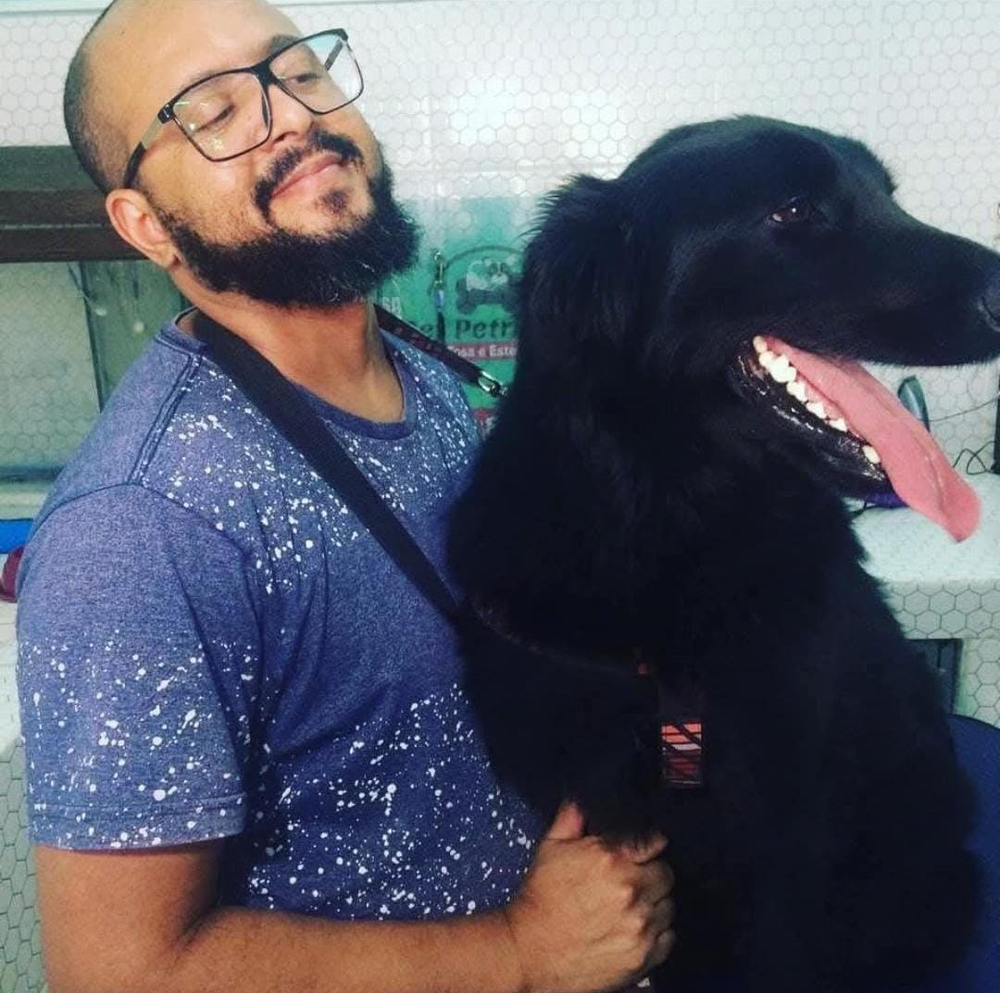
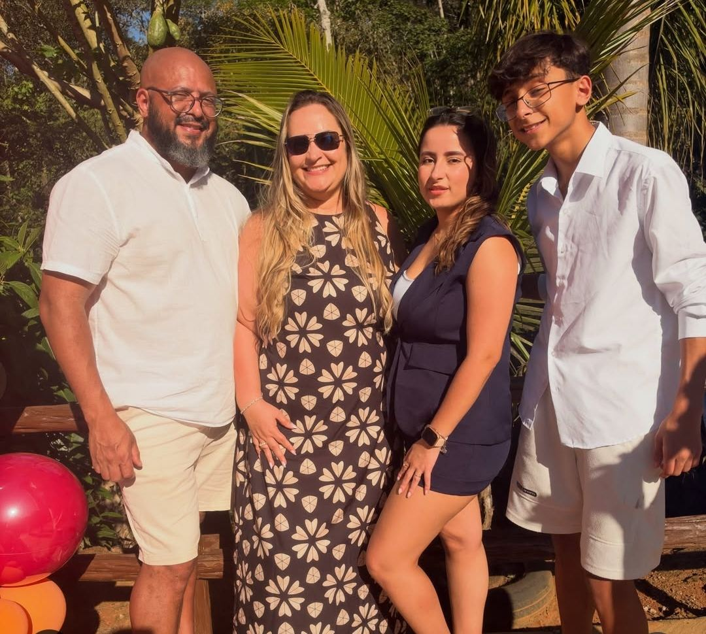
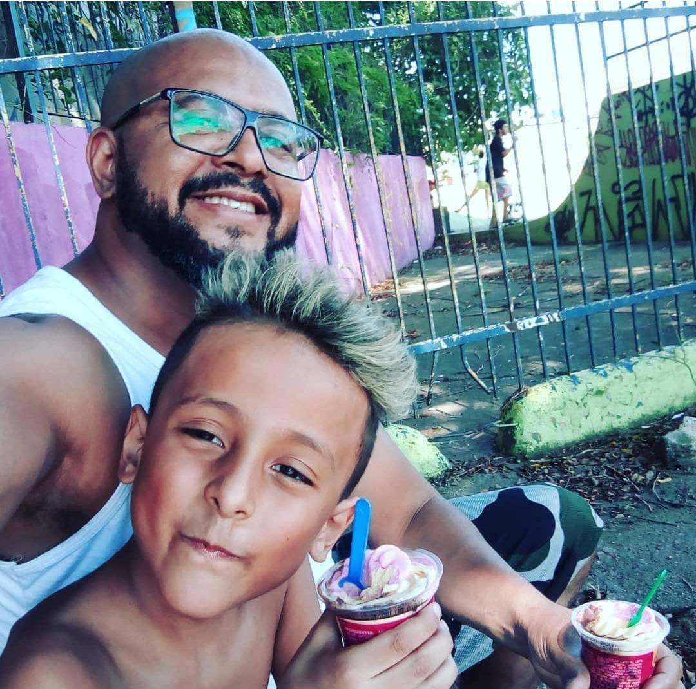
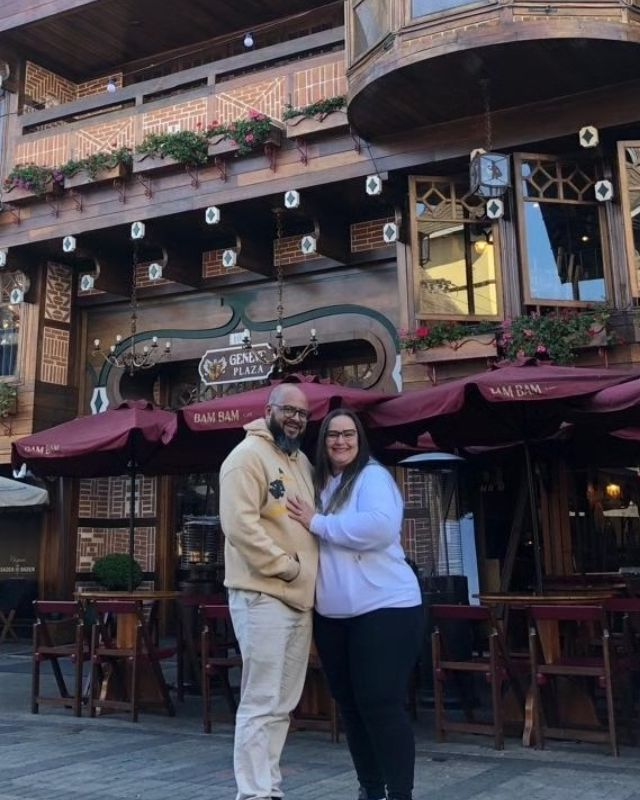

Já deixei de comprar comida para minha casa para poder usar cocaína. Hoje construo tecnologia.
Oscar Carvalho
Aos 39 anos, sem diploma e sem experiência, aprendi a programar do zero. Hoje sou sócio da Athos Tecnologia — e conto como uma vida inteira pode ser reconstruída.
O Início
Um jovem obediente,
numa casa como outra qualquer
Sou filho de dona Ângela e seu Raimundo. Cresci obediente aos meus pais, longe de qualquer envolvimento com drogas ou criminalidade. Em casa, festas e bebidas eram parte normal da rotina — como em qualquer família que se reúne.
Aos dezessete anos comecei a frequentar lugares novos, a conhecer gente diferente. Foi ali que conheci minha primeira dependência: o cigarro. Achava aquilo elegante — o jeito como seguravam entre os dedos parecia estiloso. Pouco depois veio a maconha: ela me deixava risonho, filosófico, achando que enxergava tudo com mais clareza.
Foi então que conheci a cocaína.”
Eu estava entrando num mundo sombrio — para muitos, sem volta. Com o passar dos anos, a cocaína foi cobrando um preço cada vez mais alto: perdi dignidade, machuquei minha família e deixei minha esposa quase adoecer — só por graça de Deus ela foi forte o suficiente para resistir.
Cheguei ao ponto de deixar de comprar mantimentos para casa para poder usar. Perdi oportunidades, perdi dinheiro, e por diversas vezes quase perdi minha liberdade, prestes a ser pego pela polícia.
A Virada
A saída veio de onde
menos esperava
A saída não veio de clínica, nem de médico, nem por vontade própria. Veio de um amigo que esteve comigo em todas as farras — o mesmo que, anos antes, tinha me apresentado às drogas.
Esse amigo se converteu, e decidiu, como missão pessoal, me apresentar Jesus. No começo fui rude com ele. Não queria saber. Mas ele não desistiu, até que um dia me levou para sua igreja, a Quadrangular.
Naquele primeiro culto, senti um afago que não sabia de onde vinha. No fim da pregação, o pastor perguntou quem queria aceitar Jesus como único e suficiente Salvador.
Foi o início de uma vida nova: larguei as drogas e me tornei um homem de Deus, marido, pai e amigo.
“Levantei a mão emocionado. Minha esposa, ao meu lado, me perguntou: ‘você vai mesmo?’ Ela já não acreditava que eu pudesse mudar.”
A Reconstrução
De trabalho em trabalho,
até encontrar o caminho certo
-
Após a virada
Trabalho evangelístico
Passei a atuar em casas de recuperação, ajudando outras pessoas a sair de onde eu tinha saído. Mas minha família também precisava de sustento: trabalhei em supermercados, obras de construção, gráficas e, por fim, numa distribuidora de grãos, montando cargas.
-
A cirurgia
Sete parafusos na coluna
7 parafusos fixando a coluna lombarAnos carregando peso de forma errada resultaram em graves hérnias de disco. Ignorei o alerta médico até ficar impossibilitado de caminhar. Passei por uma artrodese lombar. Minha esposa cuidou de mim em cada detalhe do pós-operatório.
-
Primeiro negócio
Pet shop de banho e tosa
5 anos especializado em corte na tesouraUsei o desligamento para empreender pela primeira vez. Fiz um curso de tosador e abri meu próprio pet shop. Por cinco anos, me especializei em corte na tesoura. Mas a coluna voltou a doer.

Uma profissão digna. Guardo com carinho cada dog que tive a oportunidade de cuidar. -
39 anos
“Todo ser humano é ensinável”
R$ 6k investidos em cursos, parcelados em 18xMeu irmão caçula plantou a ideia: por que não estudar tecnologia? Meu amigo Kleber Duarte me ensinou minhas primeiras linhas de código. Estudei numa ONG de tecnologia do meu irmão Vitor Carvalho e depois investi em cursos — sem saber se ia dar certo.
-
42 anos
A porta do Itaú
Depois de entrevistas recusadas por falta de experiência e pela idade, consegui uma nova chance. Na entrevista final, senti Deus falar comigo: “diga a ela que o mesmo Deus que ela serve, você serve também.” No dia seguinte, fui contratado.
O início da tecnologia
aprendi a programar do zero.”
Hoje
Tecnologia que
resolve problemas reais
Depois de três anos no Itaú e de me formar em Análise e Desenvolvimento de Sistemas, me reuni com amigos que sonhavam, assim como eu, em ter uma empresa de tecnologia. Abrimos o CNPJ juntos.
Sou sócio da Athos Tecnologia — criamos soluções integrando software e hardware para resolver as dores de outras empresas. De rastreadores a sistemas sob medida. Não importa o desafio: encaramos.
no Banco Itaú antes de fundar a própria empresa
Femsa e Natura, entre outros
ao entrar na tecnologia — aprendeu na prática
Minha Família
Por trás de cada conquista, existe uma família pela qual vale a pena nunca desistir
Nessas fotos estão os maiores tesouros da minha vida: minha esposa, Janaina, e meus filhos, Julia e Pablo Miguel. Eles são a minha motivação, a razão pela qual enfrento os desafios e a força que me faz continuar, mesmo quando o caminho parece difícil.


Antes
Houve um tempo em que não tínhamos nossa casa própria, não tínhamos um bom carro para nos locomover, e viajar ou passear em família era algo que nem sempre estava ao nosso alcance. Eu tinha sonhos, mas nem sempre as condições necessárias para realizá-los.

Hoje
Graças à tecnologia, à minha dedicação e, acima de tudo, à graça e à misericórdia de Deus, posso proporcionar à minha família uma vida melhor, realizar sonhos que antes pareciam impossíveis, viajar, passear e criar memórias que meus filhos levarão para a vida toda.
“Não é o cargo que conquistei, o salário que recebo ou as coisas que hoje podemos ter. É poder olhar para minha esposa e meus filhos e sentir que estou conseguindo oferecer a eles oportunidades que antes eu apenas desejava.”
Minha história me ensinou que nunca é tarde para recomeçar, que a nossa origem não determina o nosso destino e que os momentos difíceis não precisam ser o capítulo final da nossa história.
A tecnologia mudou minha profissão, mas Deus usou essa mudança para transformar a história da minha família.
Ebenezer! Até aqui nos ajudou o Senhor.
Para Quem
Uma história para quem precisa acreditar
que dá pra virar o jogo
-
Empresas
Sobre superação, reinvenção de carreira e o que realmente significa recomeçar depois dos 40.
-
Escolas
Um alerta real sobre o caminho das drogas, contado por quem viveu — e voltou.
-
Igrejas
Testemunho de fé, restauração e o que Deus pode fazer com uma vida entregue.
-
Eventos de Tecnologia
Prova de que não existe idade ou histórico “errado demais” para entrar na tecnologia.
Oscar Carvalho
Palestrante · Sócio da Athos Tecnologia
Vamos Conversar
Leve essa história
ao seu evento
Disponível para palestras em empresas, escolas, igrejas e eventos de tecnologia.
Cada convite é respondido pessoalmente.